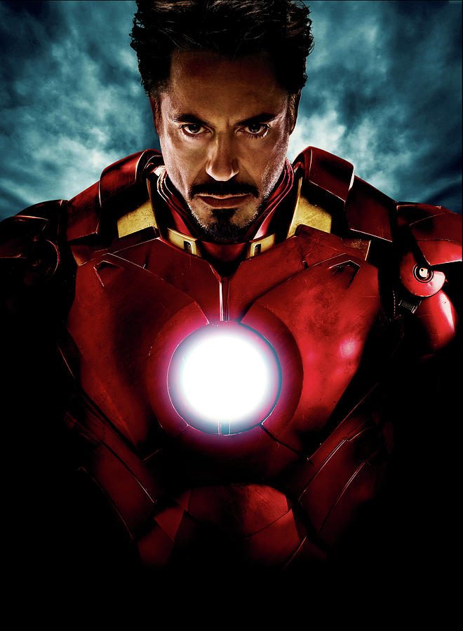

ABOUT ME
Hi!! So here are few things about myself.
I am Triveni G,from Bangalore. I am 22 years old. At the moment I am working in an IT comapany called SLK Softwares.There are many things in this universe that I love, one among them is food. I am a foodie. People say, they eat to live but I basically live to eat.LOL! True tho. And I love travelling, my dream. Hopefully I follow this dream soon in the future. I am huge dog person. I love all the animals but dogs are extra close to my heart. Well that's it, I will wrap now. See you soon.
Bonjour.
My favorite foods are:
- Biryani
- Pizza
- French Fries
etc.
My favorite movies are:
- Avengers
- Iron Man
- It
My favorite links are:
Google
Outlook
Under the name Jay Bunyan, he appeared as "Glen" in the "Scallywag Pirates" (2000) and had a minor role in Xena: Warrior Princess. He is known for his portrayal of Jack Scully in the Australian soap opera Neighbours from late 2002 until January 2009.
From 2007 to 2009, Ryan played Seaman William "Billy" Webb aka Spider in the popular Australian drama, Sea Patrol.
From a theatre background Ryan has shared the stage with the likes of John Cleese and toured internationally with The Packer, an acclaimed solo show written by NZ/Niuean playwright Dianna Fuemana.
From 2009 to 2012, Ryan played Kevin in the New Zealand comedy/drama series Go Girls.[1] In 2011, he joined the cast of the Australian comedy/drama series Offspring.[2] Also in 2011, Ryan guest starred on the American science fiction series Terra Nova, playing a murderer. For this role, Ryan used an American accent.
In 2012, Ryan was cast as the male lead in the CW's Beauty & the Beast pilot.[3] The CW officially announced the series at the May 2012 Up Fronts in New York.[4]
Ryan starred as the adult Ben Hanscom in the 2019 horror film It Chapter Two, the sequel to It (2017). He shares the character with Jeremy Ray Taylor.

| name |
age |
address |
| Triveni | 22 | sydney |